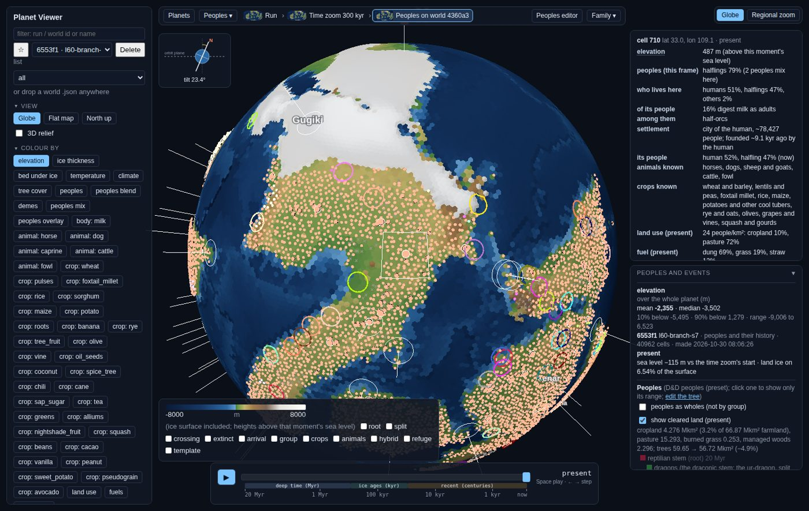
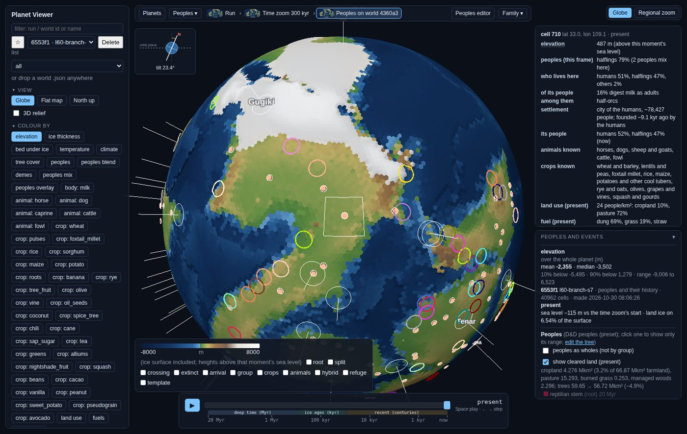
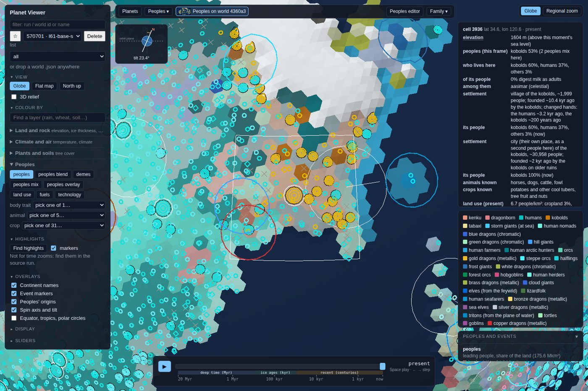
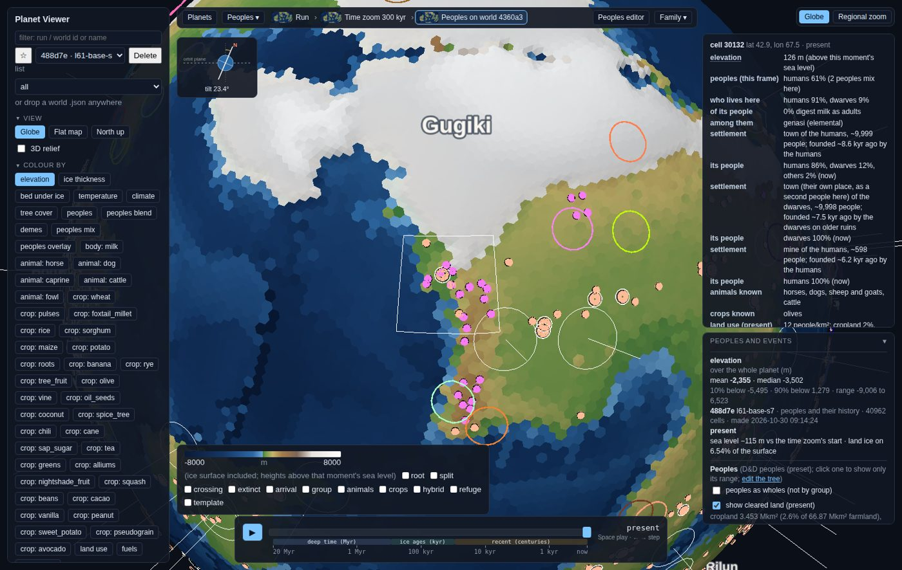
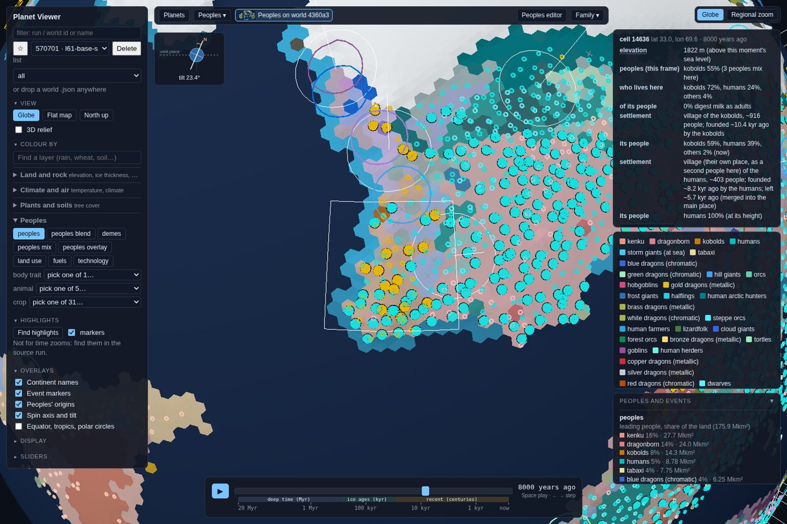
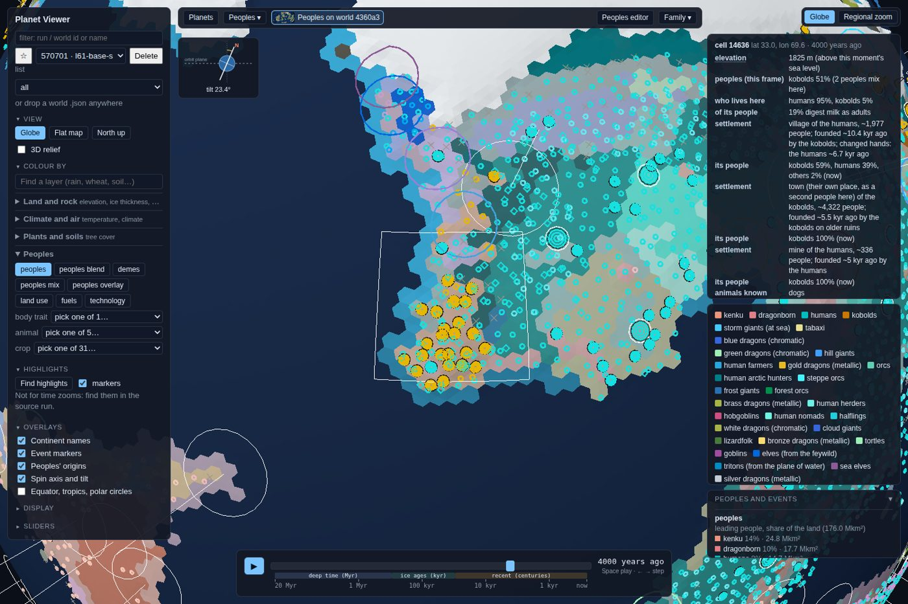
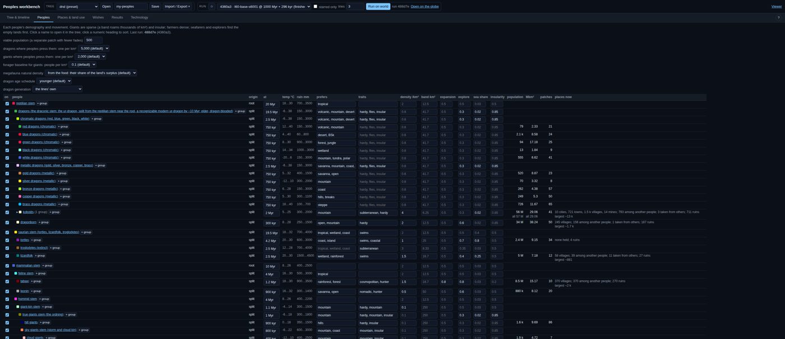
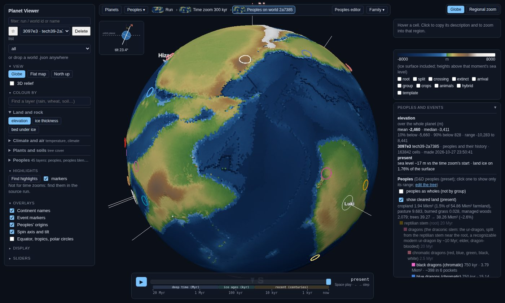
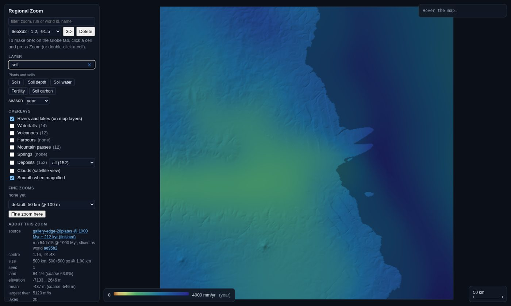

Everything that needs you since this morning, in one place. The new decisions carry ids D10 to D16, so you can answer as briefly as "D10: wait, D12: keep". Below them: what your answers turned into, pictures worth a look, and what merged today. The viewer links open your own viewer on this computer (port 8765).
Each one comes with my recommendation. "Your call" is a fine answer to any of them.
You asked for "frozen over" (40% or more of the land under ice) to fail a world. On the last stored test set, 7 of 36 worlds froze over. Lane 67 found out why.
The proper fix is to let a sheet's height count only where the sheet survives the cycle's warm phase. That touches the ice-age physics we parked for after v1 (PW-470), and it is a few rounds of work.
Interior mid-latitudes (Mongolia, the Great Plains) get about 1.8 times too much rain. Lane 62 found the cause: inflowing air brings its whole moisture column inland. The fix for that also dries the monsoon coasts (south-east USA, India, the Pampas) by half, because their rain comes from the same moisture. A sound partner fix needs the coasts to get their moisture another way. The best candidate is the land slowing onshore wind so moisture piles up at the coast. That needs land-versus-sea surface drag numbers from a meteorology source, and we have none that I can cite.
You found "humans as nearly the only miners" weird. Mines now go to the most mining-minded people in each cell, even a minority: miners and underground dwellers rank highest, orcs and goblinoids get a lore weight, and fliers like the aarakocra mine much less. Each ore seam gets a few pits, not one in every cell.
The result: about 2,200 mines per world became 260 to 370, and the human share fell from 95% to between 42% and 80%. Hobgoblins, kobolds, orcs and gnomes now do real shares.
Dwarves are still few, with 3 to 12 mines per world, because in these worlds their lands barely touch ore. The rule favours them, so the cause is where they live.
Real mining districts back this pattern: a few big specialist centres (Bronze Age Austria, Great Orme in Wales), often worked by miners invited in from elsewhere (German miners in medieval Hungary).
You suggested the history could stop at the natural point where cultures are mostly where they need to be. Three shapes it could take:
Today, at the present, the average people knows about 250 of the 547 techs, and the leaders reach the late medieval end of the tree. The options:
The new pressure rule makes dragon numbers come from food and from the peoples who live near them, so the two viewer dropdowns (dragon and giant density) no longer drive anything real.
No pressure. If you're ever near a university library, page photos would settle two open numbers:
Until then everything uses open-access papers and the free Reba city dataset, and the unverified numbers are labelled.
With hunting now very light early on, as you ruled, forager country 25,000 years ago still kept only about 4% of the dragons it would hold without people. The loss comes from people overhunting the big herds and eating the game dragons also need. That's the same "too fatal" result by a different route. The dragon lane is breaking the loss down by cause, and checking whether the fantasy hunter peoples are denser than real foragers.
| What | Lane | When |
|---|---|---|
| Dragon paper, revised: age-split mortality, bronze-age farmers weaker, the loss broken down by cause, the time course | 63 | re-runs about 8 h, then the paper's checks and peer review |
| Frozen-over rate on today's code, before and after the CO₂ fix (72 worlds) | 67 | about 6 h |
| Source hunt, pass 2: about 425 dates still unchecked, starting with metals | – | once the web-search allowance refills |
Settlements after lanes 61 and 66, and the viewer with your D1–D4 picks as the defaults. Click a viewer link to explore it yourself.









| You said | What happened |
|---|---|
| D1–D4: family hues, keep the current colour scales, docked legend, grouped picker | Done and merged (lane 65). The switches are gone, so this is now the only behaviour. |
| D5: three terms; frozen over = 40% of land, an instant fail | Done (lane 65). The judges report all three terms. That surfaced the frozen-over worlds, which led to D10. |
| Glacial maximum: 25% is fine as a placeholder | Kept at 25%, with a literature check queued (PW-1119). |
| D7: deme scale A now, D with languages · D9: keep the Table view | Recorded on the tickets. |
| D8: farmers follow land productivity, with a little softening | Built into the dragon lane, since farmer numbers drive dragon numbers. |
| Dragon pressure first; farmers weaker even in the bronze age; split mortality by age | Lane 63 rebuilt it. Early peoples can mostly reach only hatchlings, which barely dents a long-lived population (turtle demography and the dragons' own life table agree). Dense bronze-age farmers now keep 64% of their dragons (was 24%); renaissance farmers 10%. Re-runs going. |
| Tech: conditions not calendars; gnomes inventive; warlike cities invent war tech; density and cities mean more inventors | Merged (lane 64). Invention depends on pool size, specialists, culture and a ramp after the prerequisites. Small peoples now get writing from neighbours or not at all, gnomes find metal on their own in 5 of 8 runs, and Earth's timing is matched only as a check. War evidence says warlike peoples mostly adopt war tech fast, so that is how it works. |
| A big tech list, one agent per type, then a source hunt | 594 techs in seven groups. The first source pass checked 190 and confirmed 98 before the search allowance ran out (dogs move to about 15,000 years ago, kilns to about 26,000). Being folded into the tree now (lane 69). |
| P2 first; ask before writing; no whole books | The verified ask list is in the repo. The P2 paper waits on open sources only (D15). |
| P1: code best knowledge, find one source | Done (lane 66) with the free Reba city dataset for the top of the scale. Village and town bands are labelled unverified. |
| Mines: more non-human miners | Done (lane 68). See D12. |
| Too many dots; love the hover text | Done (lane 61). See the pictures. |